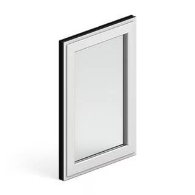
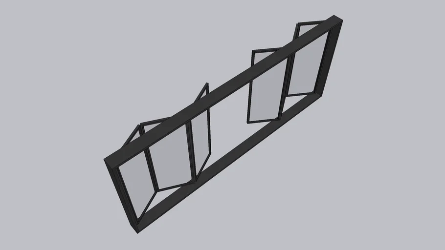
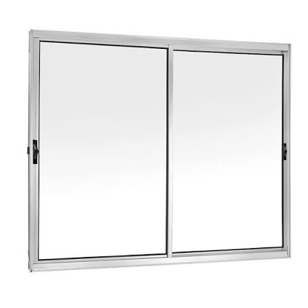
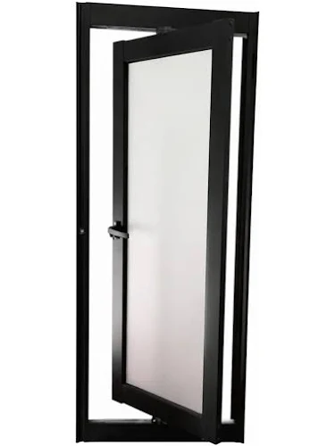
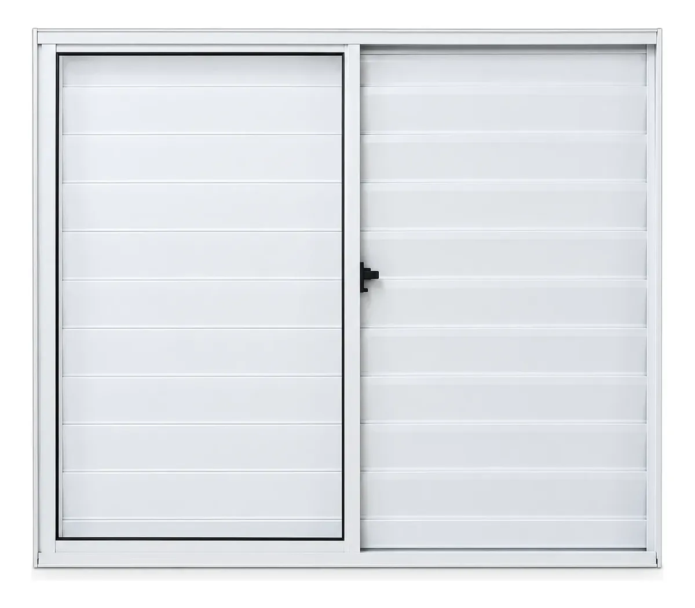
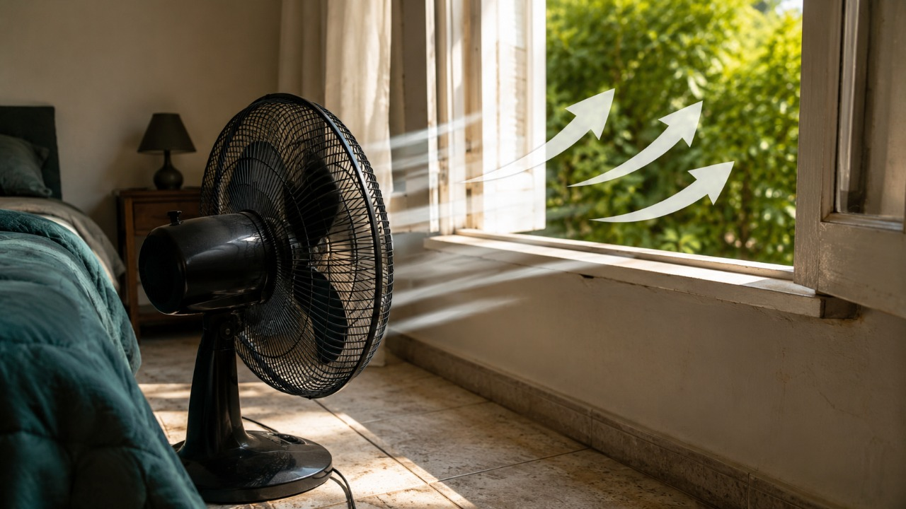
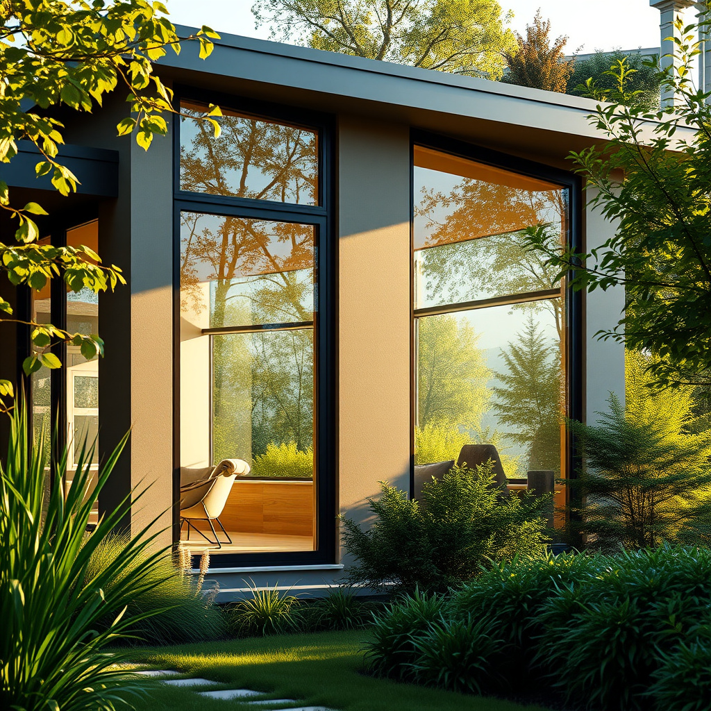

Funciona através de um básculo (uma alavanca lateral). É muito utilizada em locais altos como banheiros e cozinhas para garantir ventilação constante e privacidade.

Também conhecida como sanfonada. Suas folhas correm sobre trilhos e vão se dobrando umas sobre as outras nas laterais, liberando quase 100% da abertura do vão.

Modelo em que as folhas deslizam horizontalmente sobre trilhos. É a favorita da arquitetura moderna por economizar espaço útil interno.

Termo técnico associado às janelas tradicionais de abrir (com dobradiças nas laterais) ou modelos pivotantes que giram em torno de um eixo vertical próprio.

Uma esquadria que não possui nenhum sistema de abertura. Sua única utilidade é permitir a entrada direta de luz natural e enquadrar vistas externas.

Possui lâminas horizontais inclinadas fixas ou móveis. É amplamente aplicada em quartos por conseguir bloquear a entrada de luz mantendo a circulação de ar.
Por que usar janelas
Saúde e Renovação do Ar
As janelas permitem a ventilação dos ambientes, ajudando a renovar o ar, reduzir a umidade e eliminar odores, contribuindo para um espaço mais saudável.

Iluminação Natural e Economia
Elas permitem a entrada de luz natural durante o dia, melhoram o conforto dos ambientes e ajudam a reduzir o consumo de energia elétrica com iluminação artificial.
Conforto e Integração Visual
As janelas conectam o interior ao ambiente externo, oferecem vistas para o exterior e podem contribuir para o conforto térmico por meio da ventilação.
